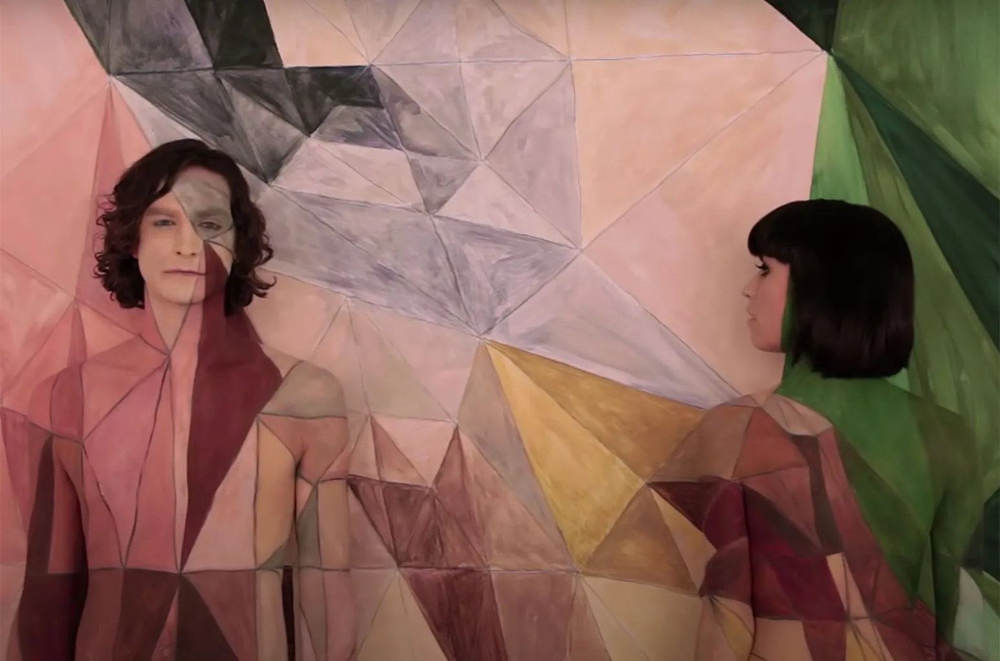

Somebody That I Used To Know
by Gotye featuring Kimbra was released on July 5, 2011
Click on the image to read a video analysis of Goyte's Somebody That I Used To Know music video


Click on the image to read a video analysis of Goyte's Somebody That I Used To Know music video
